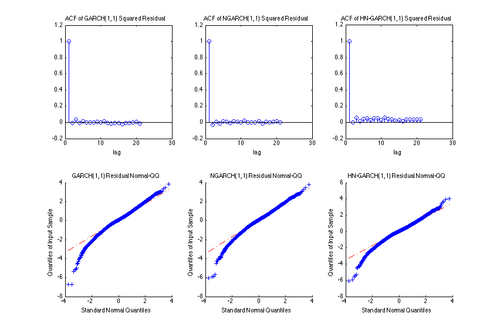
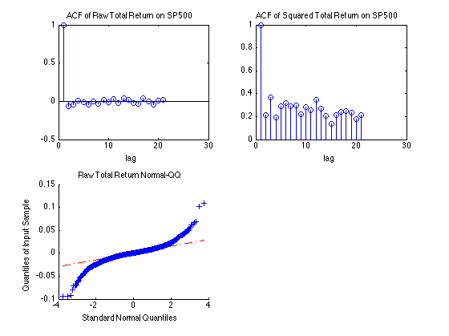

Comparison of Different GARCH models on SP500 Total return
Author: Peiliang Guo
The GARCH models being compared are GARCH, NGARCH, and HNGARCH models The parameters are estimated using MLE and then the normality of residuals are checked.
Contents
helper functions
var_process calculates variance h(t) from given set of parameters
garch_loglik calculates the likelihood of the current set of parameters
dbtype garch_loglik.m dbtype var_process.m
1 function ll = garch_loglik(model,param,y)
2 %parameter checking
3 assert(ismember(model,{'GARCH','NGARCH','HNGARCH'}),...
4 'Model has to be one of ''GARCH'', ''NGARCH'', ''HNGARCH''');
5 assert(~(strcmp(model,'GARCH') && length(param)~=4),...
6 length(param));
7 assert(~(strcmp(model,'NGARCH') && length(param)~=5),...
8 'param = [alpha beta omega gamma h1]');
9 assert(~(strcmp(model,'HNGARCH') && length(param)~=6),...
10 'param = [alpha beta omega lambda gamma h1]');
11 if param(3)<=0 || min(param(1),param(2))<0;
12 ll=-intmax;
13 return;
14 end
15 %estimate variance process using current parameter values and sp500
16 %return data
17 ht = var_process(model,param,y);
18 if strcmp(model,'GARCH') || strcmp(model,'NGARCH')
19 ll = sum(log(normpdf(y,0,sqrt(ht))));
20 else
21 lmd = param(end-2);
22 ll = sum(log(normpdf(y-lmd*ht,0,sqrt(ht))));
23 end
24 end
1 function ht = var_process(model,param,y)
2
3 alp = param(1);
4 bet = param(2);
5 omg = param(3);
6 lmd = param(end-2);
7 gam = param(end-1);
8 l = length(y);
9 ht = zeros(l,1);
10 ht(1) = param(end);
11 for i = 2:l
12 hrt = sqrt(ht(i-1));
13 if strcmp(model,'GARCH')
14 ht(i) = omg + bet*ht(i-1) + alp*y(i-1)^2;
15 elseif strcmp(model,'NGARCH')
16 ht(i) = omg + bet*ht(i-1) + alp*(y(i-1)-gam*hrt)^2;
17 else
18 ht(i) = omg + bet*ht(i-1) + alp*(y(i-1)/hrt-(lmd+gam)*hrt)^2;
19 end
20 end
21 end
Data processing
%obtaining SP500 total return raw_data = csvread('SP500TR_1992_2016.csv',1,1); sp500tr = log(raw_data(end-1:-1:1,6)./raw_data(end:-1:2,6));
MLE of GARCH model
%parameter MLE options=optimset('MaxFunEvals',1000,'Maxiter',1000,'Display','iter','LargeScale','off'); garch_param = fmincon(@(param)-garch_loglik('GARCH',param,sp500tr),... [0.1,0.8,0.1,std(sp500tr(1:100))],[],[],[],[],zeros(4,1),[],[],options); garch_ht = var_process('GARCH',garch_param,sp500tr); garch_zt = sp500tr./sqrt(garch_ht);
First-order Norm of
Iter F-count f(x) Feasibility optimality step
0 5 3.603906e+03 0.000e+00 6.139e+03
1 10 -4.432315e+03 0.000e+00 4.960e+04 7.996e-01
2 15 -1.906423e+04 0.000e+00 5.728e+06 5.632e-02
User objective function returned Inf; trying a new point...
3 21 -1.933157e+04 0.000e+00 6.270e+06 1.312e-02
User objective function returned Inf; trying a new point...
4 28 -1.936378e+04 0.000e+00 1.396e+07 9.201e-02
5 34 -1.953117e+04 0.000e+00 4.017e+06 1.171e-01
6 39 -1.954114e+04 0.000e+00 3.688e+06 2.089e-03
User objective function returned Inf; trying a new point...
7 46 -1.956725e+04 0.000e+00 3.019e+06 2.179e-02
8 55 -1.959594e+04 0.000e+00 1.588e+03 3.150e-02
9 61 -1.983687e+04 0.000e+00 8.536e+06 1.686e-01
User objective function returned Inf; trying a new point...
10 68 -2.005673e+04 0.000e+00 1.051e+07 2.909e-01
11 74 -2.022435e+04 0.000e+00 1.064e+07 1.147e-01
12 80 -2.030173e+04 0.000e+00 3.035e+05 5.038e-02
13 87 -2.031401e+04 0.000e+00 7.504e+06 4.549e-02
14 92 -2.031606e+04 0.000e+00 5.331e+07 9.518e-02
15 98 -2.040232e+04 0.000e+00 5.951e+07 2.024e-01
16 104 -2.051698e+04 0.000e+00 1.093e+07 4.537e-02
17 109 -2.055941e+04 0.000e+00 4.267e+07 1.332e-01
18 115 -2.057681e+04 0.000e+00 5.573e+05 2.939e-02
19 121 -2.058016e+04 0.000e+00 4.378e+06 2.033e-02
20 127 -2.058046e+04 0.000e+00 2.043e+06 1.772e-02
21 132 -2.058122e+04 0.000e+00 1.282e+06 1.169e-02
22 137 -2.058132e+04 0.000e+00 1.990e+05 2.640e-03
23 142 -2.058156e+04 0.000e+00 9.405e+05 3.261e-03
24 147 -2.058254e+04 0.000e+00 4.075e+06 8.652e-03
25 152 -2.058648e+04 0.000e+00 1.203e+07 2.050e-02
26 157 -2.059638e+04 0.000e+00 1.605e+07 2.170e-02
27 165 -2.059887e+04 0.000e+00 1.908e+07 3.448e-03
28 170 -2.060157e+04 0.000e+00 2.937e+06 5.657e-03
29 175 -2.060442e+04 0.000e+00 4.990e+06 2.656e-02
30 180 -2.060474e+04 0.000e+00 1.185e+06 2.533e-03
First-order Norm of
Iter F-count f(x) Feasibility optimality step
31 185 -2.060495e+04 0.000e+00 3.225e+06 2.591e-03
32 190 -2.060529e+04 0.000e+00 6.454e+06 1.548e-03
33 196 -2.060580e+04 0.000e+00 9.745e+06 1.531e-03
34 201 -2.060612e+04 0.000e+00 5.746e+06 7.876e-04
35 206 -2.060627e+04 0.000e+00 9.305e+05 1.007e-03
36 211 -2.060630e+04 0.000e+00 5.706e+05 1.804e-04
37 216 -2.060631e+04 0.000e+00 5.753e+04 1.789e-04
38 221 -2.060631e+04 0.000e+00 4.608e+03 2.682e-05
39 226 -2.060631e+04 0.000e+00 4.533e+02 2.895e-06
40 245 -2.060631e+04 0.000e+00 3.610e+00 1.043e-07
Local minimum possible. Constraints satisfied.
fmincon stopped because the size of the current step is less than
the default value of the step size tolerance and constraints are
satisfied to within the default value of the constraint tolerance.
MLE of NGARCH model
ngarch_param = fmincon(@(param)-garch_loglik('NGARCH',param,sp500tr),... [0.1,0.8,0.1, 0.1,std(sp500tr(1:100))],[],[],[],[],zeros(5,1),[],[],options); ngarch_ht = var_process('NGARCH',ngarch_param,sp500tr); ngarch_zt = sp500tr./sqrt(ngarch_ht);
First-order Norm of
Iter F-count f(x) Feasibility optimality step
0 6 3.619521e+03 0.000e+00 6.170e+03
1 12 -4.432308e+03 0.000e+00 4.960e+04 8.030e-01
2 18 -1.908010e+04 0.000e+00 5.967e+06 4.154e-02
User objective function returned Inf; trying a new point...
3 25 -1.934304e+04 0.000e+00 6.048e+06 1.283e-03
User objective function returned Inf; trying a new point...
4 33 -1.938015e+04 0.000e+00 1.357e+07 9.470e-02
5 46 -1.947669e+04 0.000e+00 4.503e+02 2.336e-02
User objective function returned Inf; trying a new point...
6 53 -1.963126e+04 0.000e+00 2.041e+06 7.838e-01
7 59 -1.984780e+04 0.000e+00 2.543e+07 5.349e-01
8 66 -2.021084e+04 0.000e+00 7.424e+06 4.631e-01
9 73 -2.021420e+04 0.000e+00 7.268e+06 7.267e-03
10 79 -2.026349e+04 0.000e+00 1.723e+06 1.526e-01
11 86 -2.036066e+04 0.000e+00 2.341e+07 2.106e-01
12 92 -2.055231e+04 0.000e+00 1.819e+08 2.485e-01
User objective function returned Inf; trying a new point...
13 109 -2.057108e+04 0.000e+00 5.723e+07 1.565e-02
User objective function returned Inf; trying a new point...
14 116 -2.057144e+04 0.000e+00 5.710e+07 5.439e-04
15 123 -2.057270e+04 0.000e+00 6.902e+07 4.177e-01
16 130 -2.068935e+04 0.000e+00 9.717e+06 9.134e-02
17 136 -2.071995e+04 0.000e+00 7.807e+06 1.613e-01
18 144 -2.072177e+04 0.000e+00 1.884e+07 3.822e-02
19 153 -2.072538e+04 0.000e+00 3.098e+07 9.491e-02
20 160 -2.075326e+04 0.000e+00 2.617e+07 9.266e-02
21 168 -2.075387e+04 0.000e+00 1.106e+07 4.441e-02
22 174 -2.076027e+04 0.000e+00 1.636e+07 1.620e-02
23 180 -2.076742e+04 0.000e+00 1.351e+07 8.312e-02
24 186 -2.077191e+04 0.000e+00 6.940e+06 8.983e-02
25 192 -2.077463e+04 0.000e+00 2.098e+07 1.577e-01
26 199 -2.077702e+04 0.000e+00 9.346e+06 7.781e-02
27 205 -2.077727e+04 0.000e+00 2.278e+04 3.982e-02
28 211 -2.077733e+04 0.000e+00 5.040e+05 1.941e-02
29 217 -2.077734e+04 0.000e+00 2.268e+05 7.236e-03
30 223 -2.077734e+04 0.000e+00 1.376e+05 4.997e-04
First-order Norm of
Iter F-count f(x) Feasibility optimality step
31 229 -2.077734e+04 0.000e+00 9.230e+04 5.935e-04
32 235 -2.077735e+04 0.000e+00 1.093e+05 9.416e-04
33 241 -2.077735e+04 0.000e+00 3.873e+04 9.438e-04
34 247 -2.077735e+04 0.000e+00 5.920e+03 3.584e-04
35 263 -2.077735e+04 0.000e+00 1.914e+03 5.980e-07
36 273 -2.077735e+04 0.000e+00 2.608e+00 1.510e-06
37 300 -2.077735e+04 0.000e+00 2.608e+00 1.773e-10
Local minimum possible. Constraints satisfied.
fmincon stopped because the size of the current step is less than
the default value of the step size tolerance and constraints are
satisfied to within the default value of the constraint tolerance.
MLE of HNGARCH model
hngarch_param = fmincon(@(param)-garch_loglik('HNGARCH',param,sp500tr),... [0.1,0.8,0.1, 0.1, 0.1,std(sp500tr(1:100))],[],[],[],[],zeros(6,1),[],[],options); hngarch_ht = var_process('HNGARCH',hngarch_param,sp500tr); hngarch_zt = (sp500tr-hngarch_param(4)*hngarch_ht)./sqrt(hngarch_ht);
First-order Norm of
Iter F-count f(x) Feasibility optimality step
0 7 3.683270e+03 0.000e+00 6.295e+03
1 14 -4.422085e+03 0.000e+00 4.896e+04 8.054e-01
2 21 -1.491410e+04 0.000e+00 7.125e+05 4.344e-02
3 28 -1.906381e+04 0.000e+00 4.712e+06 2.472e-02
4 35 -1.924959e+04 0.000e+00 2.585e+07 1.952e-04
5 42 -1.934529e+04 0.000e+00 2.239e+07 2.252e-02
6 49 -1.938875e+04 0.000e+00 6.192e+06 6.012e-02
7 57 -1.945110e+04 0.000e+00 5.653e+06 6.254e-02
8 64 -1.953097e+04 0.000e+00 1.136e+07 1.166e-01
9 71 -1.958486e+04 0.000e+00 9.434e+06 3.915e-02
10 78 -1.959554e+04 0.000e+00 9.134e+06 6.884e-03
User objective function returned Inf; trying a new point...
11 86 -1.963871e+04 0.000e+00 9.314e+06 6.174e-02
12 93 -1.986542e+04 0.000e+00 5.430e+07 4.345e-01
13 100 -1.987815e+04 0.000e+00 2.912e+07 2.334e-01
14 107 -2.012874e+04 0.000e+00 1.342e+07 2.048e-01
15 115 -2.022618e+04 0.000e+00 3.234e+07 1.369e+01
16 122 -2.030507e+04 0.000e+00 9.541e+06 1.730e+00
17 129 -2.030972e+04 0.000e+00 1.031e+07 1.913e-02
18 136 -2.035237e+04 0.000e+00 1.415e+07 2.574e+00
19 143 -2.046079e+04 0.000e+00 3.051e+07 1.658e+01
20 151 -2.047348e+04 0.000e+00 9.759e+06 2.973e+00
21 158 -2.050581e+04 0.000e+00 2.822e+06 1.986e+01
22 165 -2.051187e+04 0.000e+00 9.253e+06 2.873e+00
23 172 -2.051826e+04 0.000e+00 4.851e+06 1.795e+00
24 179 -2.056512e+04 0.000e+00 4.730e+06 1.778e+01
User objective function returned Inf; trying a new point...
25 188 -2.059770e+04 0.000e+00 2.163e+07 2.221e+01
26 195 -2.063072e+04 0.000e+00 4.831e+07 3.861e+01
27 203 -2.063409e+04 0.000e+00 1.410e+08 2.703e+01
28 211 -2.065547e+04 0.000e+00 1.911e+07 6.828e+00
29 221 -2.065685e+04 0.000e+00 3.304e+07 8.095e+00
30 228 -2.065964e+04 0.000e+00 2.582e+07 5.137e+00
First-order Norm of
Iter F-count f(x) Feasibility optimality step
31 235 -2.066323e+04 0.000e+00 5.440e+07 3.206e+01
32 248 -2.066361e+04 0.000e+00 1.070e+06 4.953e-04
33 260 -2.066362e+04 0.000e+00 2.293e+02 4.673e-04
34 273 -2.066362e+04 0.000e+00 8.650e+01 1.184e-03
35 287 -2.066362e+04 0.000e+00 5.089e+00 2.362e-04
Local minimum found that satisfies the constraints.
Optimization completed because the objective function is non-decreasing in
feasible directions, to within the default value of the function tolerance,
and constraints are satisfied to within the default value of the constraint tolerance.
Independence and Normality Diagnostics of model fit
figure(1) set(gcf,'units','centimeters','position',[0 0 30 20]) subplot(2,3,1) stem(autocorr(garch_zt.^2)) title('ACF of GARCH(1,1) Squared Residual') xlabel('lag') subplot(2,3,4) qqplot(garch_zt) title('GARCH(1,1) Residual Normal-QQ') subplot(2,3,2) stem(autocorr(ngarch_zt.^2)) title('ACF of NGARCH(1,1) Squared Residual') xlabel('lag') subplot(2,3,5) qqplot(ngarch_zt) title('NGARCH(1,1) Residual Normal-QQ') subplot(2,3,3) stem(autocorr(hngarch_zt.^2)) title('ACF of HN-GARCH(1,1) Squared Residual') xlabel('lag') ylim([-0.2 1.2]) subplot(2,3,6) qqplot(hngarch_zt) title('HN-GARCH(1,1) Residual Normal-QQ')
Raw return and squared returns ACF and raw return nomal QQ plot
Shows improvement of fit over original data
figure(2) subplot(2,2,1) stem(autocorr(sp500tr)) title('ACF of Raw Total Return on SP500') xlabel('lag') subplot(2,2,3) qqplot(sp500tr) title('Raw Total Return Normal-QQ') subplot(2,2,2) stem(autocorr(sp500tr.^2)) title('ACF of Squared Total Return on SP500') xlabel('lag')